analyze_private_IC2B
Valentin
2024-06-25
How does CAM V4 compare to previous CAM?
Renier et al. 2023, describe the Cocoa Accountability Map they use
(CAM V3) as follows: “This map includes information
on 4451 cooperatives across the country (…) from self-disclosures in
2019 and 2020.” Among which they identify “1164
cooperative-company links” and that “710 of the cooperatives in
the Cocoa Accountability Map could be identified as providing some of
the sourcing of one or more companies.”. In addition, in CAM V3
there are 510 distinct cooperatives where at least one company discloses
how many farmers it sources from.
Finally, one can count 510 distinct cooperatives where at least one
sustainable sourcing initiative (SSI) is reported (incl. by Rainforest
Alliance or Fairtrade).
In CAM V4, in 2020, 66 additional distinct cooperatives are identified. CAM V4 lists -69 more cooperative-company links than the V3. 124 additional cooperatives are found to have a link with a company in the V4. This yields 11 more cooperatives with some information on the number of farmers. Finally, the V4 has 149 more cooperatives where at least one SSI is reported than the V3.
| Distinct cooperatives | Coop-company links | Coops linked with a company | Coops with some farmer info | Coops with some certification | |
|---|---|---|---|---|---|
| V3 | 4451 | 1164 | 710 | 510 | 439 |
| V4 | 4517 | 1095 | 834 | 521 | 588 |
| V4 with ‘V3 method’ | 4586 | 1095 | 901 | 581 | 637 |
The main sources of differences
1. The identification of distinct cooperatives In
Renier et al. (2023), cooperatives are identified according to unique
combinations of their disclosed abbreviated names, full names and
spatial coordinates (“V3 method”).
As shown in Table 1 above, applying the same cooperative identification
approach to CAM V4 data yields substantially different results. The
method applied for CAM V4 does not systematically distinguish
cooperatives because of differences in reported names or even
coordinates.
## DISCLOSURE_SOURCE TRADER_NAME DISCL_SUPPLIER_ABRVNAME
## 1 BARRY CALLEBAUT BARRY CALLEBAUT COPACOL WAREHOUSE
## 2 BARRY CALLEBAUT BARRY CALLEBAUT COPACOL WAREHOUSE
## 3 BARRY CALLEBAUT BARRY CALLEBAUT COPACOL WAREHOUSE
## 4 BARRY CALLEBAUT BARRY CALLEBAUT COPACOL WAREHOUSE
## 5 MARS <NA> COOP CA COPACOL
## 6 MARS <NA> COOP CA COPACOL
## 7 MONDELEZ <NA> COPACOL
## 8 MONDELEZ <NA> COPACOL
## 9 MONDELEZ <NA> COPACOL
## 10 RAINFOREST ALLIANCE <NA> COOP CA COPACOL
## DISCL_SUPPLIER_FULLNAME DISCL_LONGITUDE DISCL_LATITUDE COOP_ID
## 1 <NA> -5.371273 5.262833 2550
## 2 <NA> -5.371273 5.262833 2550
## 3 <NA> -5.371273 5.262833 2550
## 4 <NA> -5.371273 5.262833 2550
## 5 <NA> -5.371344 5.262790 2550
## 6 <NA> -5.371344 5.262790 2550
## 7 Ste Coop agri cot lauzoua carrefour NA NA 2550
## 8 Ste Coop agri cot lauzoua carrefour NA NA 2550
## 9 Ste Coop agri cot lauzoua carrefour NA NA 2550
## 10 <NA> NA NA 25502. The addition of disclosure data (see consolidated_disclosures.R) NOTE code below would need to be re-written because CAM V3 is now deemed valid for 2019 and so there has been extrapolation from 2019 to 2020.
| V3 | V4 | V4 - V3 | |
|---|---|---|---|
| RAINFOREST ALLIANCE | 38 | 106 | 68 |
| ECOOKIM | 0 | 23 | 23 |
| ETC GROUP | 0 | 15 | 15 |
| ALFRED RITTER | 0 | 2 | 2 |
| TONY’S CHOCOLONELY | 4 | 6 | 2 |
| VALRHONA | 0 | 1 | 1 |
| COLRUYT | 0 | 1 | 1 |
| FERRERO | 71 | 71 | 0 |
| OLAM | 198 | 198 | 0 |
| FAIRTRADE | 0 | 0 | 0 |
| CEMOI | 33 | 33 | 0 |
| ECOM | 44 | 44 | 0 |
| SUCDEN | 25 | 25 | 0 |
| MONDELEZ | 62 | 62 | 0 |
| PURATOS | 1 | 1 | 0 |
| FILDISI | 0 | 0 | 0 |
| ALTER ECO | 1 | 1 | 0 |
| ETHIQUABLE | 1 | 1 | 0 |
| ALBERT HEIJN | 1 | 1 | 0 |
| HERSHEY | 69 | 68 | -1 |
| TOUTON | 34 | 33 | -1 |
| MARS | 90 | 88 | -2 |
| BLOMMER | 79 | 75 | -4 |
| BARRY CALLEBAUT | 192 | 174 | -18 |
| NESTLE | 76 | 50 | -26 |
| CARGILL | 165 | 122 | -43 |
Number of coops and links in 2022
## [1] NA "RAINFOREST ALLIANCE" "FERRERO"
## [4] "OLAM" "CARGILL" "BLOMMER"
## [7] "NESTLE" "BARRY CALLEBAUT" "HERSHEY"
## [10] "TOUTON" "FAIRTRADE" "CEMOI"
## [13] "ALFRED RITTER" "ECOM" "SUCDEN"
## [16] "MONDELEZ" "MARS" "ETC GROUP"
## [19] "TONY'S CHOCOLONELY" "PURATOS" "ECOOKIM"
## [22] "VALRHONA" "FILDISI" "COLRUYT"
## [25] "ALTER ECO" "ETHIQUABLE" "ALBERT HEIJN"## [1] 1829## A B C D E
## In 2022 5641 1281 1073 611 NASize and variability of direct supply chains
Size in number of distinct coops and in number of farmers. For both metrics, we can show those strictly disclosed, and those extrapolated from other disclosures (from the same company or not). We can track not only disclosures made by traders, but also companies.
Variability can be measured by a proper metric for stickiness (Reis et al. 2020) and it can be visualized by looking at coops added and removed from one disclosure to the other.
Size
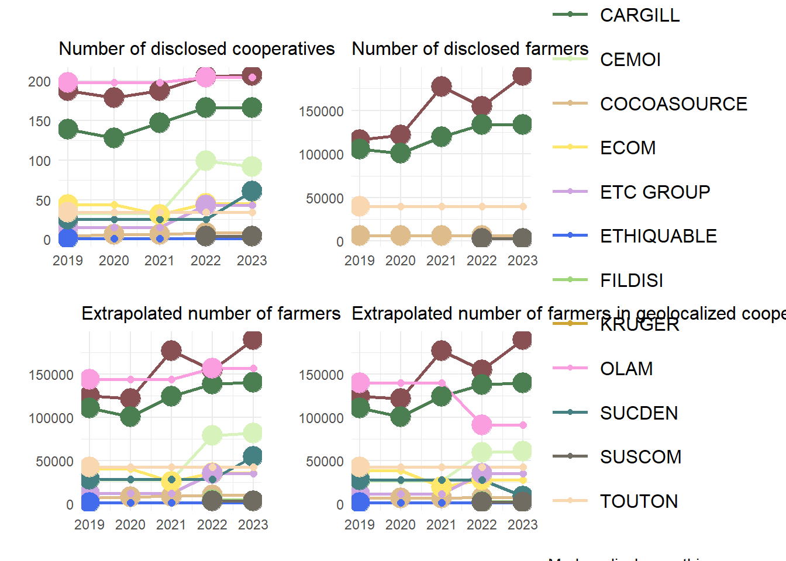
Companies 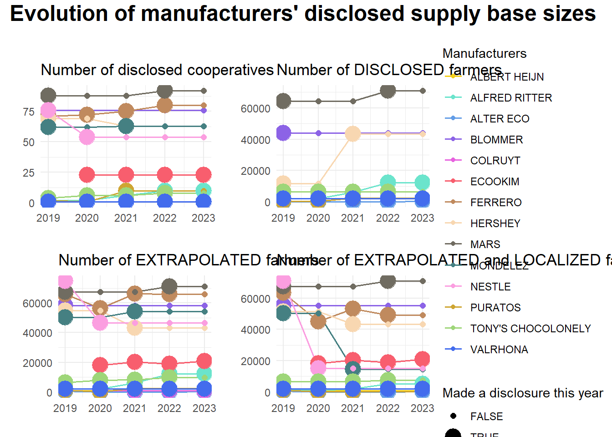
Variability
Here, we show as long as it is the second disclosure (not counting coops disclosed by cam v3 as the first disclosure), and absolute sizes are shown the previous graphs. So we would have only Cargill in 2020. To achieve this, we need to remove disclosures made in 2019, except if it’s by Cargill (by Cargill directly, not through CAM only). AND to remove info from the CAM that got repeated.
## [1] 122## [1] 174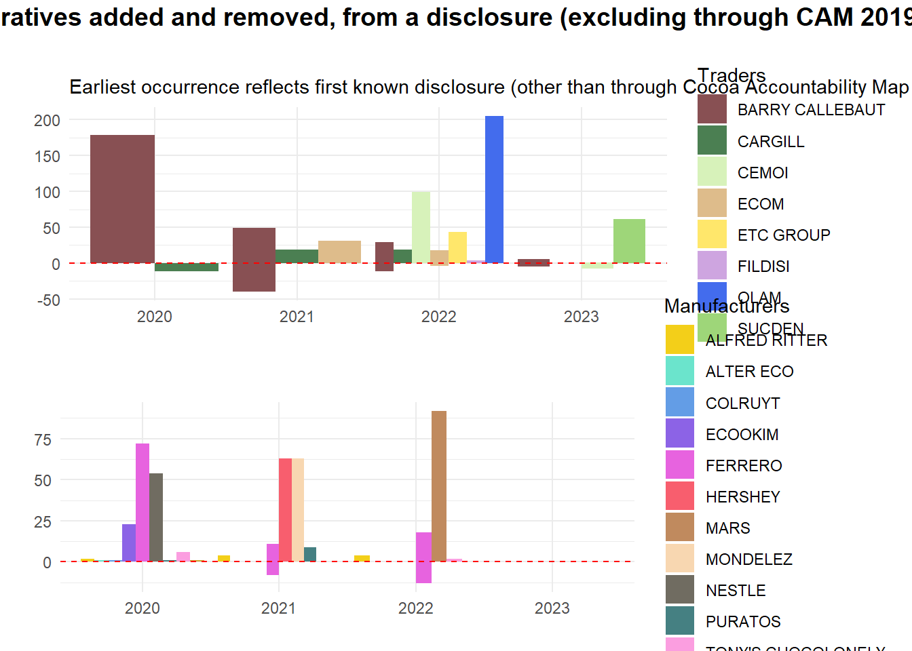
Repeat, but including the CAM v3, hence showing changes due to strong mis-identification of coops between this source and the other disclosures.
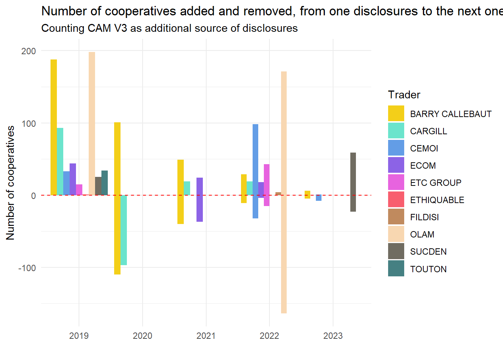
Old code:
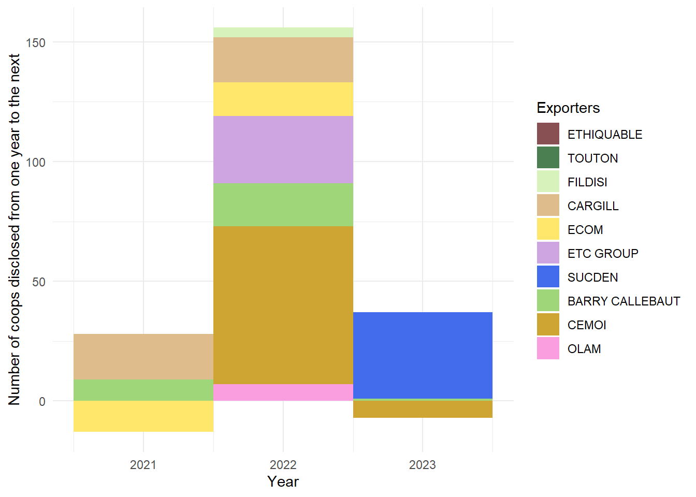
What CAM V4 reveals about transparency practices in Ivorian cocoa supply chains
Which companies disclosed how many times?
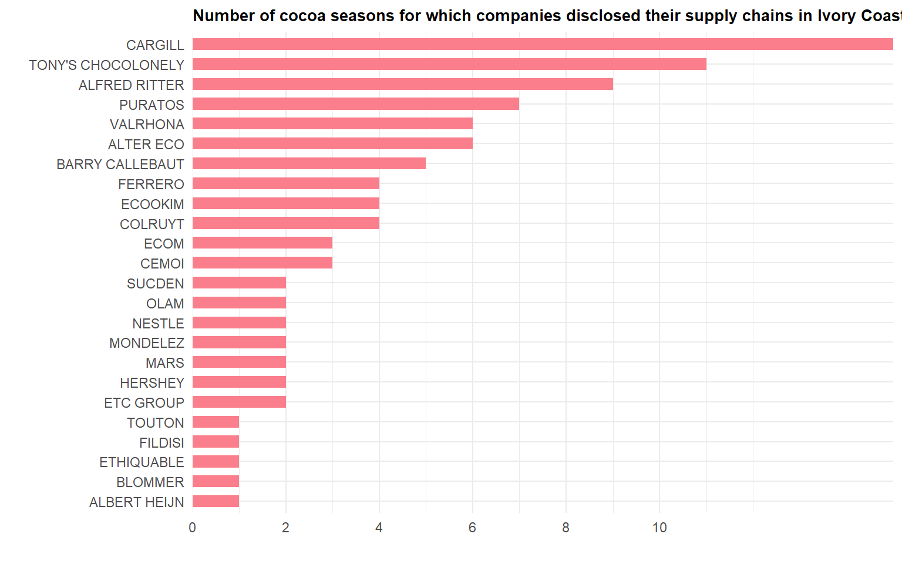
Who disclosed when?
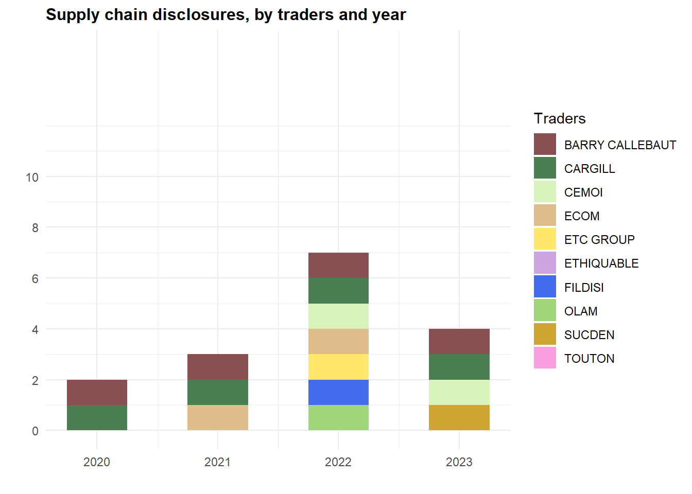
Consistency in transparency and its content
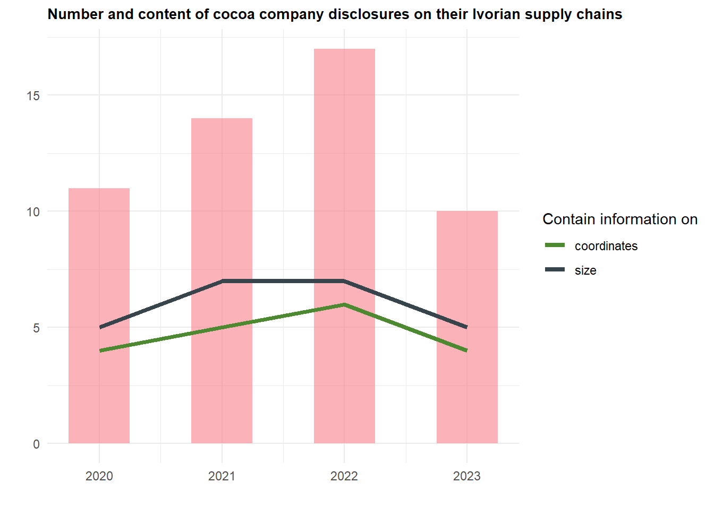
The spatial distribution of transparency
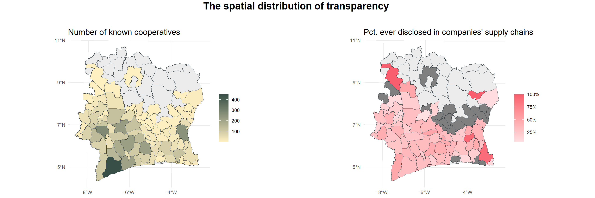
The state of sustainability initiatives in the Ivorian cocoa supply chains
In this section, we can make the assumption that what companies disclose gives a complete picture of reality, because there is little (less) motivation for a company to conceal its sustainability initiatives.
The different SSIs and their sizes
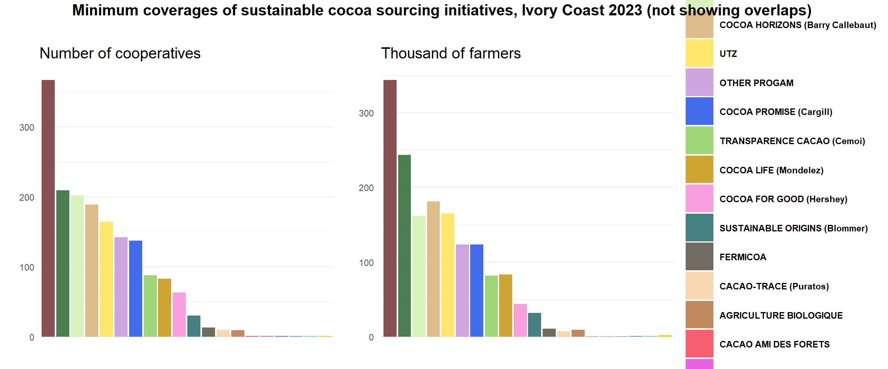
How much do SSIs and certification overlap?
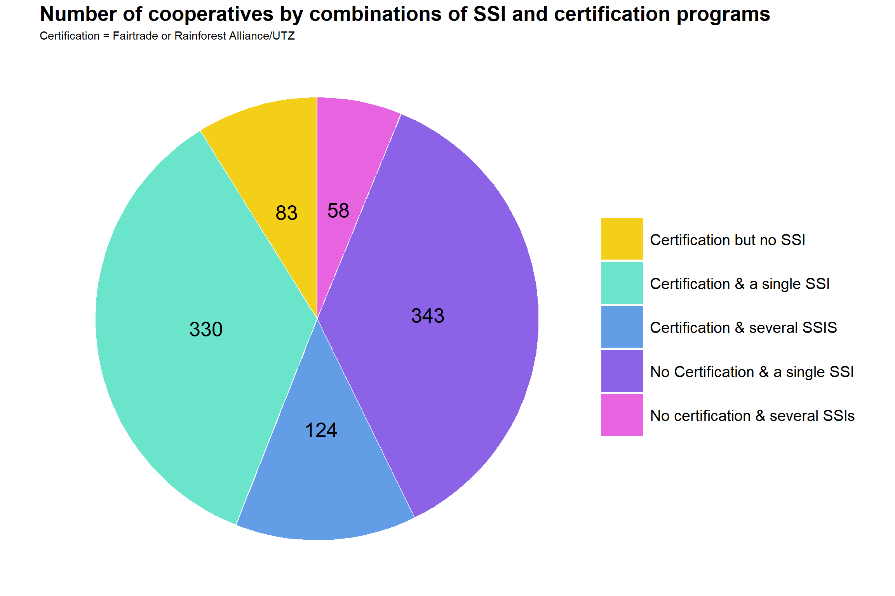
The spatial distribution of SSIs
Given the relatively low number of cooperatives where several SSIs are implemented, we map SSI coverage irrespective of intensity (i.e., whether a cooperative has at least one SSI being implemented, irrespective of how many there may be).